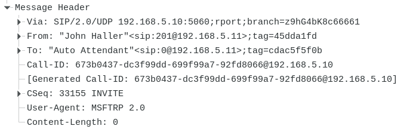
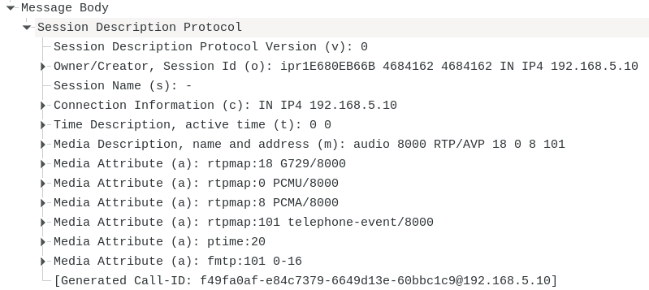
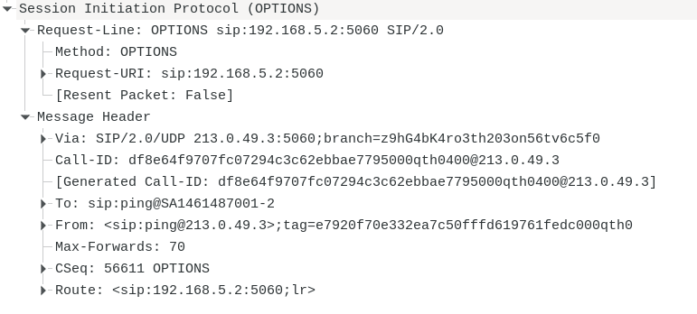
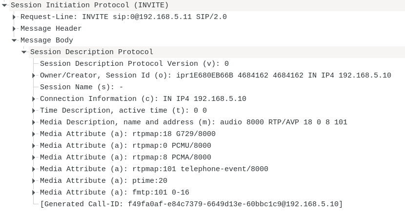
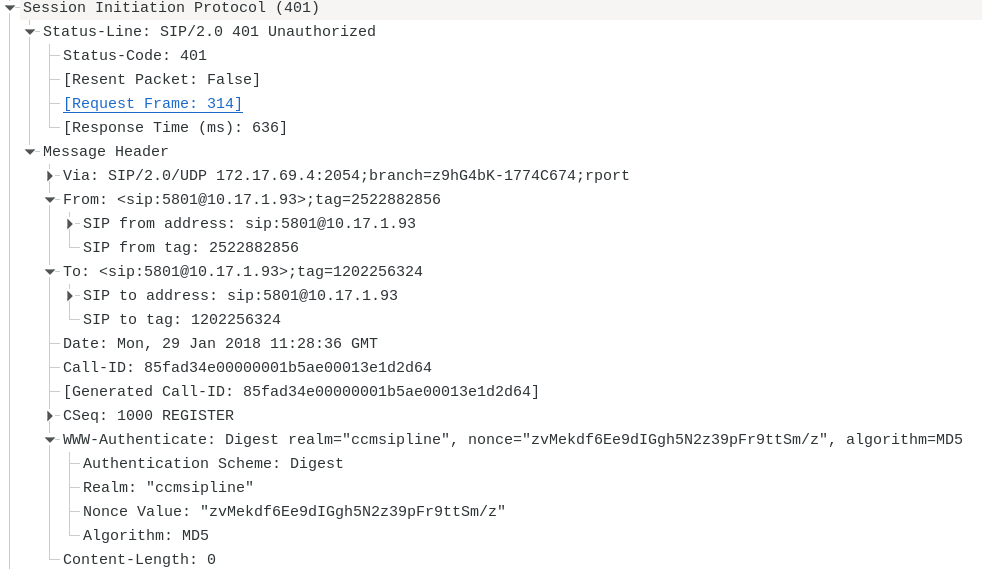

Protocolo SIP¶
Documentación y RFCs¶
Introducción¶
Hay muchas aplicaciones en Internet que require la creación y gestión de una sesión, donde una sesión, es considerada un intercambio de datos entre un grupo de participantes.
El protocolo SIP, permite que los endpoints (agentes de usuario), se descubran entre sí y acuerden una caracterización de una sesión que les gustaría compartir. Para localizar posibles participantes de una sesión, SIP permite la cración de una infraestructura de red a lo que los agentes de usuario, pueden enviar registros, invitaciones a sesiones y otras solicitudes.
Nota
SIP es una herramienta de uso general, para crear, modificar y finalizar sesiones que funcionan independientemente de los protocolos de transporte y sin depender del tipo de sesión que se está estableciendo
Descripción general de SIP¶
SIP es un protocolo de control de la capa de aplicación, que puede establecer, modificar y finalizar sesiones multimedia, como llamadas de telefonía por Internet. También puede invitar a los participantes a sesiones ya existentes, como conferencias multicast
SIP soporta, para el establecimiento y terminación de comunicaciones multimedia:
User location, determinación del sistema final que se utilizará para la comunicación
User availability, detrminación de la parte llamada a participar en las comunicaciones
User capabilities, determinación de los medios y parámetros que se utilizarán
Session setup, establecimiento de parámetros de sesión tanto en la parte llamanda como en la parte llamante
Session management, inclute transferencia y finalización de sesiones, modificaciones de parámetros de sesión e invocación de servicios
SIP, debe usarse junto a otros protocolos para proporcionar servicios completos a los usuarios, de forma que construye una arquitectura multimedia
RTP y RTCP
SDP
RTSP

Nota
El protocolo SIP, permite establecer sesiones multimedia entre puntos extrfemos (Agentes de usuario).
Las principales funciones que realiza son:
Localización de un agente de usuario
Contacto con un agente de usuario para indicar la voluntad de establecer una sesión
Intercambio de información del medio sobre el que se va a establecer la sesión
Modificación del medio existente en las sesiones
Liberación de medios empleados en las sesiones
Permite la petición y entrega de información de presencia (Un agente de presencia SIP, es un dispositivo capaz de rcibir peticiones de suscripción a la notificación de eventos y generar las correspondientes notificaciones de estado de dichos eventos), así como de mensajería instantánea
Descrpipción de la operación¶
Las funciones básicas de la operación SIP, comprenden:
Registro de usuario
Localización de un punto final
Señal de deseo de comunicarse
Negociación de parámetros de sesión
SIP se basa en un modelo de transacción de solitud y respuesta similar a HTTP, cada transacción, consiste en una solicitud que invoca a un método o función en el servidor y al menos, una respuesta.
Los detalles de la sesión, como el tipo de medio o codec, no se describen mediante SIP, el cuerpo del mensaje, contiene una descripción de la sesión en el protocolo SDP (Sesion Description Protocol)
Estructura del protocolo¶
SIP, está estructurado en capas, lo que significa que su comportamiento, se describe en términos de un conjunto de etapas independientes. Cuando decimos que un elemento contiene una capa, queremos decir, que cumple con el conjunto de reglas definidas para esa capa.
La capa mas baja de SIP, es su sintaxis y codificación
La segunda capa, es la capa de transporte. Define cómo un cliente, envía solicitudes y reibe respuestas y como un servidor, recibe solicitudes y envía respuestas
La tercera capa, es una transacción. Una transacción, es una solicitud enviada por un cliente, junto con todas las respuestas a esa solicitud
Cada una de las entidades SIP, excepto el proxy sin estado, es un usuario de transacción (UT). Cuando una UT desea enviar una solicitud, crea una instancia de transacción de cliente y le pasa la solicitud junto con la dirección IP de destino, el puerto y el transporte al que enviar la solicitud. Una UT que crea una transacción de cliente, también puede cancelarla, cuando un liente cancela una transacción, solicita que el servidor detenga el procesamiento , vuelva al estado que existía antes de que se iniciara la transacción y genere una respuesta de error específica a esa transacción
Los elementos sip, se denomina Agentes de Usuario, tanto del cliente, como del servidor (UAS y UAC)
Mensajes SIP¶
SIP es un protocolo basado en texto que usa el juego de caracteres UTF-8 y consiste en una solicitud de un cliente a un servidor o una respuesta de un servidor a un cliente. Ambos tipos de mensajes, consisten en una línea de inicio, uno o mas campos de encabezado, una línea vacía que indica el final de los campos de encabezado y un cuerpo de mensaje.

La línea de inici0, encabezado y la línea vacía, deben terminarse mediante una secuencia de salto de línea y retorno de carro (CRLF)
Requests (Peticiones)¶
Las solicitudes SIP se distinguen por tener una línea de solicitud para una línea de inicio, contiene un nombre de método, un URI de solicitud y la versión del protocolo, separados por un caracter de espacio
Nota
Los métodos, son considerados como los verbos del protocolo
Request-Line: INVITE sip:16543@192.168.10.11 SIP/2.0
La especificación del método, define varios métodos:
REGISTER, notifica al servidor su dirección IP y su dirección URI
INVITE, invita a un usuario a participar de una sesión
ACK, se ha recibido una respuesta desde un servidor a INVITE
OPTIONS, permite a un usuario interrogar a otro sobre sus capacidades.
BYE, se usa para terminar una sesión
CANCEL, se usa para cancelar una petición previamente enviada
INFO, se usa para enviar información de señalización
UPDATE, permite actualizar características de una sesión
Posteriormente, se han ampliado el número de métodos, definidos en RFCs separados
REFER, usado por un agente de usuario para solicitar a otro el acceso a un recurso URI o URL. Este método indica al receptor, que debe contactar con una tercera parte, usando la información de contacto.
SUBSCRIBE, usado por un agente de usuario a fin de establecer una suscripción o solicitud para que el UA, envíe información sobre un evento en particular (contenida en el evento NOTIFY)
NOTIFY, utilizado por un UA para informar de los cambios en el estado de un evento para el que existe una suscripción
MESSAGE, usado para transportar mensajes instantáneos
UPDATE, sirve para cambiar las características de una sesión establecida o refrescarla
INFO, lo usa un agente de usuario para enviar información de señalización de la llamda a otro usuario con el que se ha establecido la sesión (envío DTMF)
PRACK, se utiliza para aceptar una respuesta provisional que se ha trnasmitido de manera fiable
PUBLISH, es un método para la publicación de estado de eventos. Es similar al método REGISTER, en el sentido de que permite crear, modificar y borrar el estado en otra entidad que gestiona dicho estado en nombre del usuario
El request-URI, indica el usuasrio o servicio al que se dirige la solicitud.
Los mensajes de solicitus y respuesta incluyen la versión SIP en uso.
Responses (Respuestas)¶
Las respuestas SIP se distinguen de las solicitudes al tener una línea como una línea de inicio. Una línea de estado, consta de la versión del protocolo seguida de un código de estado numérico y su frase textual asociada, con cada elemento separado por un caracter de espacio
Status-Line: SIP/2.0 100 Trying
El código de estado, es un código de resultado entero de tres dígitos que indica el resultado de un intento de comprender y satisfacer una solicitud, la frase, tiene la intención de dar una breve descripción textual del código de estado
1xx → Provisional
2xx → Aceptación
3xx → Redirección
4xx → Error de petición
5xx → Error de servidor
6xx → Fallos globales
Campos de cabecera¶
Cada campo de encabezado, cosnta de un nombre de campo seguido de dos puntos y el valor del campo. El orden de los cambos de encabezado, no es significativo.
Nota
Sin embargo, se recomienda que los campos de encabezado que se necesitan para el procesamiento del proxy (Via, Route, Record-Route, Proxy-Require, Max-Forwards, y Proxy-Authorization) aparezcan en la parte superior del mensaje para facilitar el análisis rápido.
Algunos campos de encabezado, sólo tienen sentido en solicitudes o respuestas, si aparece un campo de encabezado en un mensaje que no coincide con su categoría, debe ignorarse.
Cuerpo del mensaje¶
Las solicitudes, pueden tener cuerpos de mensaje, la interpretación, depende del método de solicitud
Comportamiento de User Agent¶
Un agente de usuario, representa un sistema final. Contiene un cliente de agente (UAC) que genera solicitudes y un servidor de agente (UAS), que responde a ellas. Los procedimientos UAC y UAS, dependen de si la solicitud está fuera o dentro de un diálogo y según el método de la solicitud.
Una solicitud SIP válida formulada por un UAC, debe contener como mínimo, los siguientes campos de encabezado, que son los bloques fundamentales de un mensaje SIP
To, este campo de encabezado, especifica el destinatario deseado de la solicitud o la dirección de registro del usuario o recurso que es el objetivo de esta solicitud.
From, este campo, indica la identidad lógica del iniciador de la solicitud, posiblemente, la dirección de registro del usuario
CSeq, sirve como una forma de identificar y ordenar transacciones. Consiste en un número de secuencia y un método, el método, debe coincidir con el de la solicitud.
Call-ID, actúa como un identificador único para agrupar una serie de mensajes, debe ser el mismo para todas las solicitudes y respuestas enviadas por un UA en un diálogo
Max-Forwards, sirve para limitar la cantidad de saltos que puede transitar una solicitud camnino a su destino. Consiste en un número entero que es decrementado por 1 en cada salto, si llega a 0 antes de que la solicitud llegue a su destino, será rechazado con un 483 (Too Many Hops) como respuesta de error. Un UAC debe insertar un campo Max-Forwards en cada solicitud que origina, con un valor de 70, este valor, se eligió para ue sea lo suficicntemente grande como para garantizar que una solictud, no se descarte en ninguna red SIP cuando no haya bucles.
Via, este campo, indica el trasmporte utilizado para la transacción e identifica dónde se enviará la respuesta
Estos campos de encabezado son adicionales a la línea de solicitud obligatoria, que contiene el método, Request-URI y la versión SIP
En algunos casos, la respuesta no será un mensaje SIP, sino un mensaje de error o una redirección, en este caso, los clientes, deben usar los campos URI en el encabezado de contacto para formular una o más solicitudes nuevas basadas en la redirección recibida.
Ciertos códigos de respuesta 4xx, requieren un procesamiento UA específico, independientemente del método, como por ejemplo errores 401 (no autorizado) 0 407 (se requiere autenticación de proxy), el UAC debe seguir los procedimientos de autenticación para volver a intentar la solicitud con credenciales.
Registros¶
SIP ofrece capacidad de descubrimiento, si un usuario desea iniciar una conversación con otro, debe consultar con un servidor proxy, que son los responsables de recibir una solicitud y determinar dónde enviarla en función del conocimiento de la ubicación del usuario.
El registro, crea enlaces en un servicio de ubicación para un dominio particular que asocia un URI de dirección de registro con una dirección de contacto.
El registro, implica enviar una solicitud REGISTER a un UAS conocido como registrador, que actúa como el frontend del servicio de ubicación del dominiio, este servicio, es consultado por un servidor proxy, que es el responsable de las solicitudes de enrutamiento para ese dominio (generalmente, es la misma maquina)
Construyendo la solicitud de registro¶
Una petición REGISTER puede agregar un nuevo enlace entre una dirección de registro y una de contacto
Los siguientes campos deben incluirse en una petición REGISTER
Request-URI
To
From
Call-ID
CSeq
Contact
Consulta de capacidades¶
El método SIP OPTIONS, permite que un UA consulte a otro o a un servidor proxy en cuanto a sus capacidades, esto permite que un cliente, descubra información sobre los métodos admitidos, ,tipos de contenido, extensiones, codecs, etc, sin tener que llamar al destino
Diálogo¶
Un concepto clave para un agente de usuario, es el de diálogo, que epresenta una relación SIP punto a punto entre dos agentes de usuario que persiste durante algún tiempo. Se identifica un diálogo en cada UA con una ID de diálogo, que consta de un valor de Call-ID, una etiqueta local (el campo From) y una remota (el campo To).
El mecanismo para terminar los diálogos, es específico del método. El método BYE finaliza una sesión y el diálogo asociado a ella
Iniciando una sesión¶
Cuando un agente de usuario desea iniciar una sesión, formula una solicitud INVITE, la cual, solicita al servidor que establezca una sesión, los UAS deberán consultar al usuario si acepta la invitación, en caso afirmativo, enviará una respuesta 2xx, en caso negativo, se enviará una respuesta 3xx, 4xx, 5xx o 6xx, dependiendo del motivo del rechazo. Antes de enviar una respuesta final, el UAS, también puede enviar respuestas provisionales (1xx) para informar al UAC del progreso de contacto con el usuario llamado.

Existen reglas especiales para el cuerpo del mensaje, el cual, contien una descripción de la sesión. Está, indica los medios de comunicación deseados (audio, video, etc), los parámetros de esos medios (los tipos de codec) y las direcciones para recibir los medios, el otro UA, responde con otra descripción de sesión, que indica qué medios de comunicación se aceptan . En esta especificación, las ofertas y respuestas, pueden aparecer en las solicitudes y respuestas INVITE y en ACK

Nota
Un escenario común ocurre cuando la persona que llama no está dispuesta. Una respuesta 486 (Busy Here), será devuelta en ese escenario
Una vez que recibe una respuesta final, el UAC necesita enviar un ACK por cada respuesta final que recibe.
Una respuesta 2xx a un INVITE, establece una sesión y también crea un diálogo entre los dos agentes de usuario
Nota
Durante una sesión, se pueden modificar parámetros de la misma (direcciones, puertos, agregar un medio de transmisión, etc.), esto, se logra enviando una solictud RE-INVITE
Terminar una sesión¶
La solicitud BYE se usa para terminar una sesión específica o un intento de sesión. Cuando se recibe en un diálogo, cualquier sesión asociada a ese diálogo, debe terminar.
Si la respuesta para BYE es 481 (llamada o transacción no existe), 408 (tiempo de espera de solictud) o bo se recibe ninguna respuesta, el UAC, debe considerar la sesión y el diálogo terminado
Servidor Proxy¶
Los servidores Proxy son elementos que enrutan las solicitudes SIP a los servidores de agente de usuario y las respuestas SIP a los clientes de agente de usuario. Una solicitud, puede atravesar varios servidores proxy en su camino a un UAS. Cada uno, tomará las decisiones de enrutamiento, modificando la solictud antes de enviarla al siguiente ekemento.
Las respuestas se enviaran a través del mismo conjunto de proxies, pero en orden inverso

Transacciones¶
SIP es un protocolo transaccional, las interacciones entre componentes tienen lugar en una serie de mensajes independientes. Especificamente, una transacción SIP, consiste en una sola solicitud y cualquier respuesta a esa solicitud
Las transacciones tienen un lado del cliente y un lado del servidor. El lado del cliente se conoce como una transacción del cliente y el lado del servidor como una transacción del servidor. La transacción del cliente envía la solicitud y la transacción del servidor envía la respuesta. Las transacciones de cliente y servidor son funciones lógicas que están integradas en cualquier número de elementos.
La transacción INVITE, es un apretón de manos de tres vías, la transacción cliente envía un INVITE, el servidor envía respuestas y el cliente, termina con un ACK. Para transportes poco confiables (UDP), la transacción del cliente, retransmite las solicitudes en un intervalo que comienza en T1 segundos y se duplica despues de cada retransmisión.
Nota
T1 es una estimación del tiempo de ida y vuelta (RTT) y su valor predeterminado es 500 ms.
Después de recibior una respuesta 1xx, cualquier retransmisión cesa por completo y el cliente espera nuevas respuestas.
Finalmente, la transacción del servidor, decide enviar una respuesta final. Para cada respuesta final que se recibe en la transacción de cliente, se envía un ACK, cuyo propósito es apagar las retransmisiiones de la respuesta.
Campos de la cabecera (Header Fileds)¶
Accept¶
Si no hay un ancabezado Accept, el servidor debe asumir un valor predeterminado de application/sdp
Alert-Info¶
Cuando está presente, especifica un tono de llamda alternativo. Un uso típico, es que un proxy inserte este campo de encabezado para proporcionar una característica de timbre distinta
Alert-Info: <http://www.example.com/sounds/moo.wav>
Allow¶
Enumera el conjunto de métodos admmitidos por el UA que genera el mensaje. La ausencia de Allow Header, no debe interpretarse como que el UA no admite métodos, sino que no está proporcionando información sobre qué métodos admite
Authentication-Info¶
Proporciona autenticación mútua con HTTP-Digest
Call-ID¶
Identifica de forma exclusivo una invitación particular o todos los registros de un cliente en particular. Una conferencia multimedia, puede dar lugar a llamadas con diferentes Call-ID.
Call-ID: f81d4fae-7dec-11d0-a765-00a0c91e6bf6@biloxi.com
Contact¶
Proporciona un URI cuyo significado depende del tipo de solicitud o respuesta en la que se encuentra. Puede contener un nombre para mostrar, un URI con parámetros de URI y parámetros de encabezado.
Contact: "Anonymous" <sip:anonymous@10.168.3.1:5060>
Content-Encoding¶
Se utiliza como un modificador del tipo de medio. Cuando está presente, su valor indica qué codificaciones de contenido adicionales se han aplicado al cuerpo de la entidad y, por lo tanto, qué mecanismos de decodificación deben aplicarse para obtener el tipo de medio al que hace referencia el campo.
Content-Length¶
Indica el tamaño del cuerpo del mensaje, en número decimal de octetos
Content-Type¶
Indica el tipo de medio del cuerpo del mensaje enviado al destinatario, debe estar presente si el cuerpo no está vacío
Content-Type: application/sdp
CSeq¶
Incluye un número de secuencia decimal y el método de la solicitud, sirve para proporcionar un medio para identificar transacciones de manera única y para diferencias entre nuevas solicitudes y retransmisiones de solicitudes
From¶
Indica el iniciador de la solicitud, el sistema debe utilizar el nombre para mostrar «Anonymous» si la identidad del cliente debe permanecer oculta
From: "Anonymous" <sip:anonymous@anonymous.invalid:5060>;tag=Teldat_3223827664-279049229
Max-Forwards¶
Debe utilizarse con cualquier método SIP para limitar el número de proxies o gateways que pueden reenviar la solicitud al siguiente servidor. El valor inicial recomendado es 70.
Proxy-Aythorization¶
Permite a un cliente identificarse a un proxy que requiere autenticación
Authorization: Digest username="5802",realm="ccmsipline",nonce="Udjmknb/Y6fuSQtZM8S4X1+wd+ut/OpV",response="6b2e0acc2f0998ac745147bf6d025065",uri="sip:10.17.1.93",algorithm=MD5
Route¶
Se utiliza para forzar el enrutamiento de una solicitud a través del conjunto de proxies enumerados
To¶
Especifica el destinatario lógico de la solicitud
User-Agent¶
Contiene información sobre el UAC que origina la solicitud
Nota
Revelar la versión de software específica del agente de usuario, podría permitir que este se vuelva mas vulnerable contra el software que se sabe que tiene bugs.. Este campo, debe ser una opción configurable
Via¶
Indica la ruta tomada por la solicitud hasta el momento, contiene el protocolo de transporte utilizado, el nombre de host del cliente y posiblemente el número de puerto
Códigos de respuesta¶
Informativas (1xy)¶
Se emplea para indicar el progreso de la llamada, evitando las retransmisioines de las peticiones. Son opcionales, es decir, un UAS puede enviar una respuesta final sin tener que haber enviado previamente una respuesta provisional.
Mientras que las respuesta finales, tienen que recibir un ACK, las provisionales no tienen porque ser reconocidas, excepto cuando se usa el método PRACK de trabnsmisión fiable
100 Triying, indica que algún tipo de acción se está llevando a cabo para procesar la llamada.
180 Ringing, indica que el INVITE ha sido recibido por el agente de usuario y se le está dando señal de llamada. A partir de esta respuesta, el UAC generará su propio tono de llamada, salvo que se reciba el campo «Alert-Info»
181 Call is being forwarded, indica que la llamada está siendo desviada a otro terminal
182 Call queued, indica que el INVITE se ha recibido y que se procesará en una cola
Aceptación¶
Estas respuestas, indican que la petición ha sido aceptada
200 OK, esta respuesta tiene dos usos, acepta una invitación de sesión INVITE, en cuyo caso contendrá unh cuerpo de mensaje con las propiedades del medio y el segundo, como respuesta a otras peticiones, indicando que se ha recibido con exito.
202 Accepted, indica que el UAS ha recibido y comprendido la petición, pero que no ha sido autorizada o procesada por el servidor.
Redirección¶
La respuesta de redireción es enviada por un UAS que actúa como servidor redirect, dirigiendo al cliente a un contacto elegido entre un conjunto de direcciones URI alternativas.
Un UAS puede enviar esta respuesta de esta clase, en caso de que esten implementados los servicios de desvío de llamada.
300 Multiples choices, redirección que contiene múltiples direcciones de contacto
301 Moved Permanently, indica la nueva direcciój URI de la parte llamada
302 MOved Temporarily, la dirección URI incluida en esta respuesta, tiene una validez temporal indicado en la cabecera «Expires»
305 Use Proxy, contiene la dirección URI que apunta a un servidor que tiene información autorizada sobre la parte llamante, es decir, el recurso requerido, debe accederse a través del servidor proxy
380 Alternative service, la llamada falló, pero las alternativas son detalladas en el cuerpo del mensaje (por ejemplo, desvío al buzón de voz)
Errores dbido al cliente¶
Respuesta usada por un servidor que indica que la petición no puede ser formulada tal y como se ha remitido, el cliente no debe volver a intentar la misma petición sin modificación.
400 Bad Request, la solicitud no pudo ser entendida, debido a un error de sintaxis
401 Unauthorized, la solictud requiere de autenticación de usuario
403 Forbidden, el servidor entiene la petición y está correctamente formulada, pero la rechaza
404 Not Found, el usuario identificado en la dirección URI no existe en el dominio identificado
405 Method Not Allowed, el método especificado no está permitido
407 Proxy Authentication Required, la solicitud requiere autenticación de usuario
415 Unsupported media type, indica que el tipo de medio contenido en la petición, no se soporta
420 Bad extension, la extensión especificada, no se soporta en el agente de usuario
480 Temporarily Unavailable, la petición ha alcanzado el destino correcto, pero no está disponible por alguna razón
486 Busy Here, destinatario está ocupado
488 Not Acceptable Here, indica que algunos aspectos de la descripción de la sesión, no son aceptables
Error debido a fallo en el servidor¶
Esta clase de respuestas se usarán para indicar que la petición no mse puede procesar debido a un fallo en el propio servidor
500 Server Internal Error, se envía cuando el servidor se ha encontrado con un fallo inesperado, que no le permite procesar la petición
501 Not Implemented, el UAS no reconoce el método requerido
502 Bad Gateway, un proxy que está actuando como gateway de otra red e indica que existe algún problema en la otra red que impide procesar la petición
503 Service Unavailable, indica que el servicio requerido, no está disponible temporalmente
504 Server Timeout, indica que la petición ha fallado debido al vencimiento de un temporizador
Version Not Supported, el servidor ha rechazado la petición, debido a la versión SIP implementada en la petición
513 Message Too Large, el tamaño de la petición, es demasiado grande para ser procesado
Error Global¶
Esta respuesta, indica que el servidor sabe que la petición fallará
600 Busy Everywhere, versión definitiva de la respuesta 486 (ocupado), pero a cualquier posible dirección del usuario identificado en el Request-URI.
603 Declien, indica que no acepta la llamada porque no quiere o porque no puede
604 Does Not Exist Anywhere, suimilar a 404, pero el servidor tiene información autizada para indicar que el usuario no puede ser localizado en ninguna dirección.
606 Not acceptable, indica que algún aspecto de la sesión requerida, no es aceptable por el UAS y en consecuencia, no se puede estblecar la sesión.
Protocolo SDP¶
El protocolo SDP, trata de un lenguaje para la descripción del medio de comunicación.
SDP, contiene la siguiente información sobre el medio empleado en la sesión
Dirección IP
Número de puerto usado para el protocolo de transporte
Tipo de medio (audio, video, etc.)
Esquema de codificación del medio.
Adicionalmente, SDP incluye también
Sujeto de la sesión
Hora de inicio y fin
Información de contacto relacionada con la sesión
Un mensaje SDP está compuesto de un conjunto de campos, cuyos nombres, está abreviados a una sola letra y se colocan siguiendo un orden establecido para facilitar el análisis.
SDP no es fácilmente extnesible, la única manera de añadir nuevas capacidades, es definiendo nuevos atributos
SIP usa los campos de conexión, medio y atributos, para establecer sesiones entre agentes de usuario. Dado que el tipo de medio y el codec que se usa en una determinada sesión, son parte de la negociación de la conexión, SIP, podrá usar SDP para especificar múltiples alternativas de tipos de medios y aceptar o rechazar algunos de ellos.
Uso de autenticación HTTP¶
SIP proporciona un mecanismo de autenticación basado en desafíos y sin estado que se basa en la autenticación HTTP. El mecanismo de autenticación Digest proporciona autenticación de mensajes y protección de reproducción, sin integridad ni confidencialidad de mensajes.
El marco de autenticación SIP, es muy similar al de HTTP (RFC 2617). En SIP, un UAS utiliza la respuesta 401 (no autorizao para cuestionar la identidad de un UAC)
En general, la autenticación SIP es significativa para un ámbito específico, un dominio de protección. Por lo tanto, para la autenticación implicita, cada domino de protección, tiene su propio conjunto de nombres de usuario y contraseñas. Del mismo modo, los UAC que representan a muchos enlaces (gateways PSTN), pueden tenr su propio nombre de usuario y contraseña específicos del dispositivo, en lugar de cuentas para usuarios particulares de su dominio.
Si bien, un servidor puede desafiar la mayoría de las solicitudes SIP, hay 2, que requieren un manejo especial: ACK y CANCEL
Cualquier credencial en un INVITE que haya sido aceptado por un servidor, debe ser ser aceptada por ese servidor para el ACK. Los UAC que crean un mensaje ACK, duplicarán todos los valores del campo de cabecera Authorization y Proxy-Authorization que aparecieron en el INVITE a la que corresponde el ACK. Los servidores, no deben intentar desafiar un ACK.
Los servidores, no deben intentar desafiar las solicitudes CANCEL, ya que estas, no se pueden volver a enviar.
Un UAC, puede ubicar credenciales que no sean válidas o que el servidor desafiante, no las acepte por cualquier razón. En este caso, un servidor puede repetir su desafio o puede responder con 403 (Forbidden). Un UAC, no debe volver a intentar las peticiones con las credenciales que se acaban de rechazar.

Cuando un UAC recibe 401, debe, si es posible, volver a originar la solicitud con las credenciales adecuadas, una vez que se hayan proporcionado las credenciales de autenticación, los UA, deberían almacenar en cache las credenciales para un valor de campo y el dominio del campo To, e intentar reutilizar estos valores en la próxima solicitud de ese desstino.